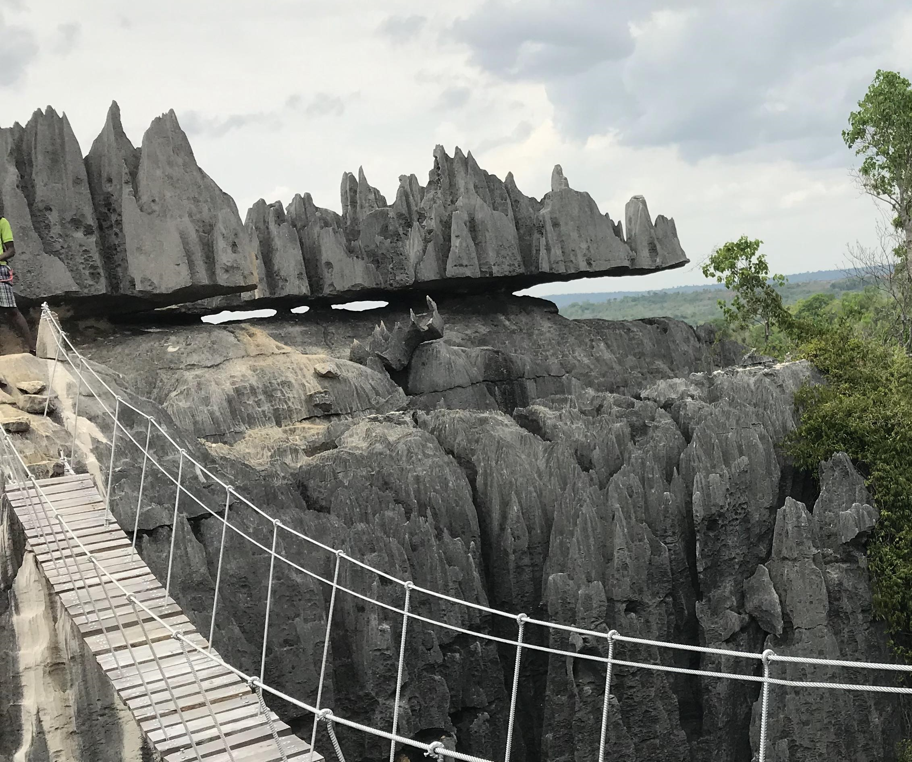

🪨 Les Tsingy
Découvrez les impressionnantes formations rocheuses des Tsingy de Madagascar.
À propos des Tsingy
Les Tsingy sont des formations calcaires spectaculaires qui offrent un paysage naturel unique à Madagascar.
Le site est particulièrement apprécié pour ses paysages impressionnants, ses sentiers et sa biodiversité.
🪨 Activités aux Tsingy
🥾 Randonnée
Explorez les chemins et découvrez les formations rocheuses.
🌿 Nature
Découvrez la biodiversité et les paysages naturels.
🌉 Exploration
Découvrez les passerelles et les paysages spectaculaires.
📸 Photographie
Capturez les magnifiques paysages des Tsingy.
📸 Galerie
📍 Localisation
Les Tsingy de Bemaraha se trouvent dans l'ouest de Madagascar.
💬 Vous souhaitez visiter les Tsingy ?
Contactez-nous ou faites directement une demande de réservation.
📅 Réserver 💬 whatsapp